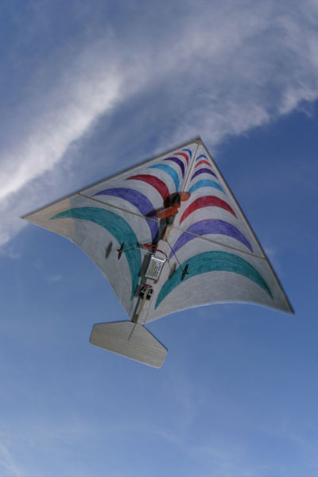
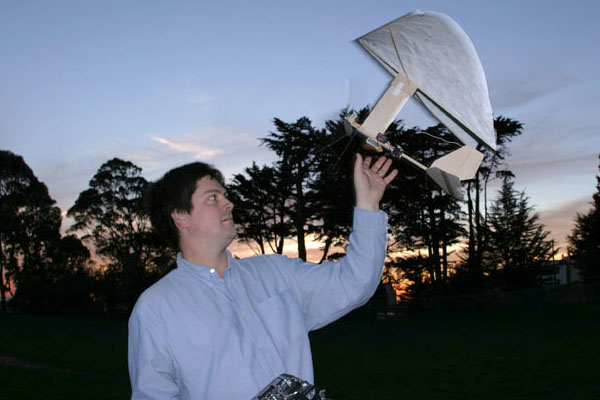
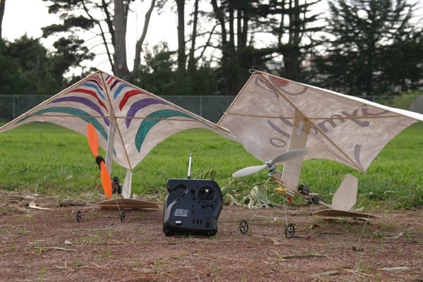
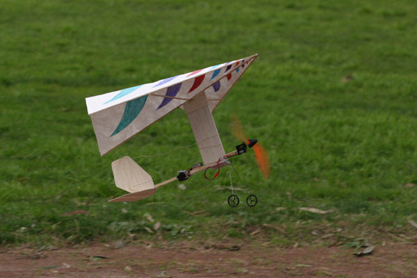
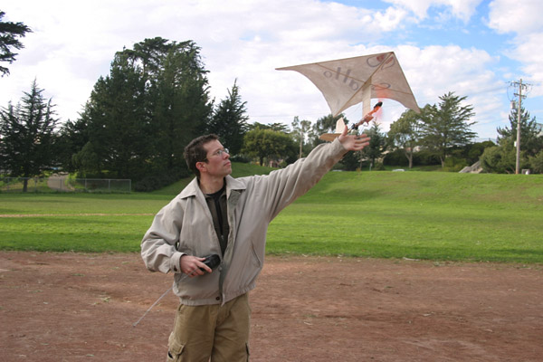
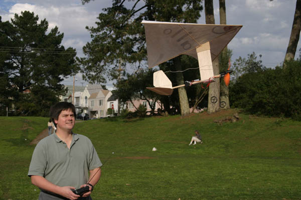

Jeff uses a little "Body English" to avoid crashing into the camera.

His distinctive markings shown clearly.

I finally got the hand catch worked out.

The Gymallo is a perfect match for the Futaba 3FR radio.

The Gymallo climbs out briskly after taking off for another circuit of the park.

Jeff demonstrates how easily the Gymallo hand launches.

The Gymallo is very easy to fly close in for maximum enjoyment.